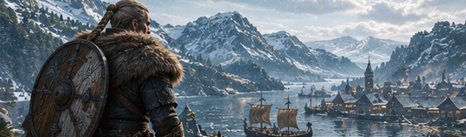

Protagonista
Eivor
Guerrero o guerrera del clan del Cuervo, cuyo destino se desarrolla entre Noruega e Inglaterra.
Eivor lidera a un clan nórdico que busca asentarse en Inglaterra. Entre alianzas, incursiones y conflictos políticos, la aventura explora la cultura vikinga y el choque entre distintas formas de entender el poder.
Eivor lidera a un clan nórdico que busca asentarse en Inglaterra. Entre alianzas, incursiones y conflictos políticos, la aventura explora la cultura vikinga y el choque entre distintas formas de entender el poder.
Este dossier reúne los personajes, el contexto histórico, los lugares y las actividades que definen esta entrega. La información está organizada para descubrir el juego sin perderse entre sus distintas capas.
Las figuras que dan forma a la historia de Assassin’s Creed Valhalla.

Guerrero o guerrera del clan del Cuervo, cuyo destino se desarrolla entre Noruega e Inglaterra.
Jarl y figura central en el viaje y las ambiciones del clan.
Miembro de los Ocultos cuya presencia conecta la historia con la Hermandad.
Responsable de alianzas y asuntos del asentamiento.
Inglaterra y Noruega · 872–878 · Una recreación histórica que combina acontecimientos reales y ficción.
Tras abandonar Noruega, Eivor y su clan buscan un futuro en Inglaterra. La construcción de alianzas con reinos sajones se entrelaza con las incursiones, los conflictos internos y los secretos de los Ocultos.
Regiones, ciudades y escenarios que dan personalidad a esta aventura.
Paisajes montañosos y fiordos del inicio de la aventura.
Reino sajón clave en la disputa por Inglaterra.
Territorios con alianzas, fortalezas y campañas.
Asentamiento que el clan convierte en su hogar.
Los sistemas principales que definen la forma de jugar esta entrega.
Asaltar monasterios y fortalezas para conseguir recursos.
Construir edificios y desbloquear servicios en Ravensthorpe.
Combinar armas en ambas manos y desarrollar habilidades.
Navegar por ríos y costas con la tripulación.
Completar arcos regionales para consolidar el poder del clan.
Investigar y localizar miembros de una organización secreta.
Qué hacemos durante la aventura, cómo exploramos el mundo y qué sistemas conviene dominar.
Explorar regiones, sincronizar puntos de vista, buscar pistas sobre la Orden de los Antiguos, completar misterios locales, saquear monasterios y reunir materiales para ampliar Ravensthorpe.
Detalles y sistemas especiales que merece la pena descubrir durante la exploración.
Los misterios regionales sustituyen parte de las actividades secundarias tradicionales.
Los miembros de la Orden se descubren reuniendo pistas y siguiendo cadenas de objetivos.
El asentamiento evoluciona con edificios, alianzas y decisiones del jugador.
ARCHIVO EN AMPLIACIÓN · Se añadirán ubicaciones concretas y capturas propias a medida que se complete la documentación de cada juego.
Llevó la fórmula RPG a una escala enorme, con asentamiento propio, arcos regionales y una ambientación vikinga.